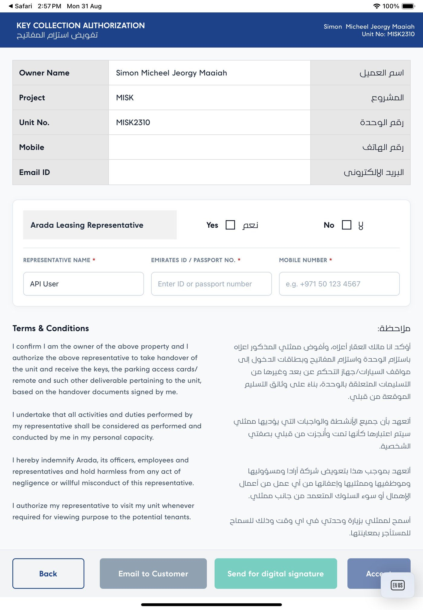
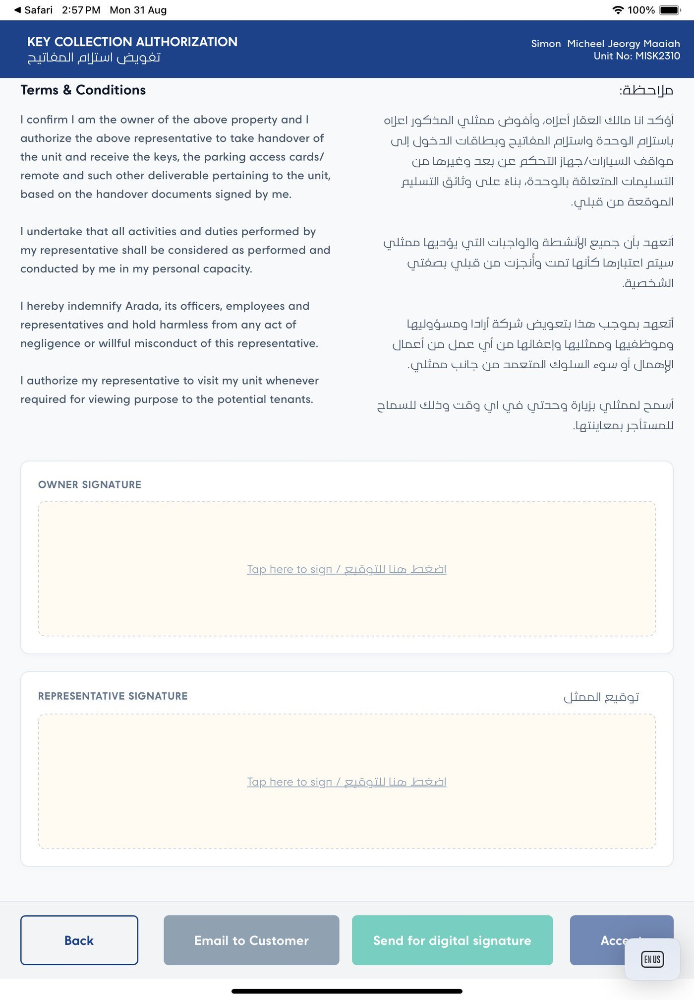
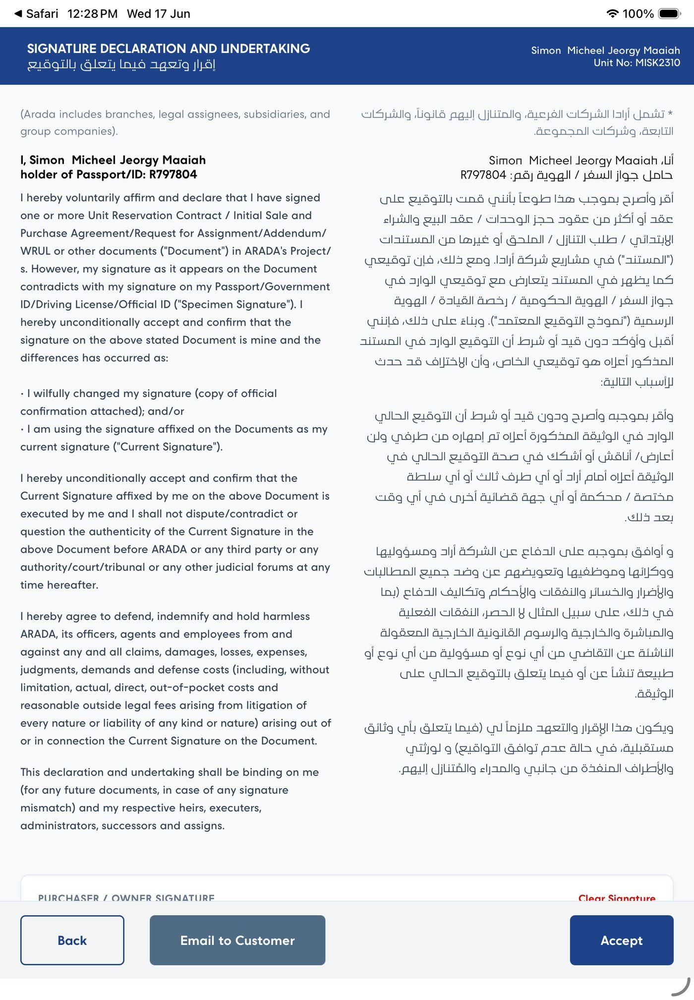
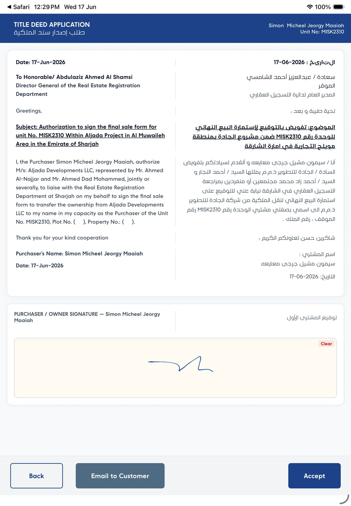
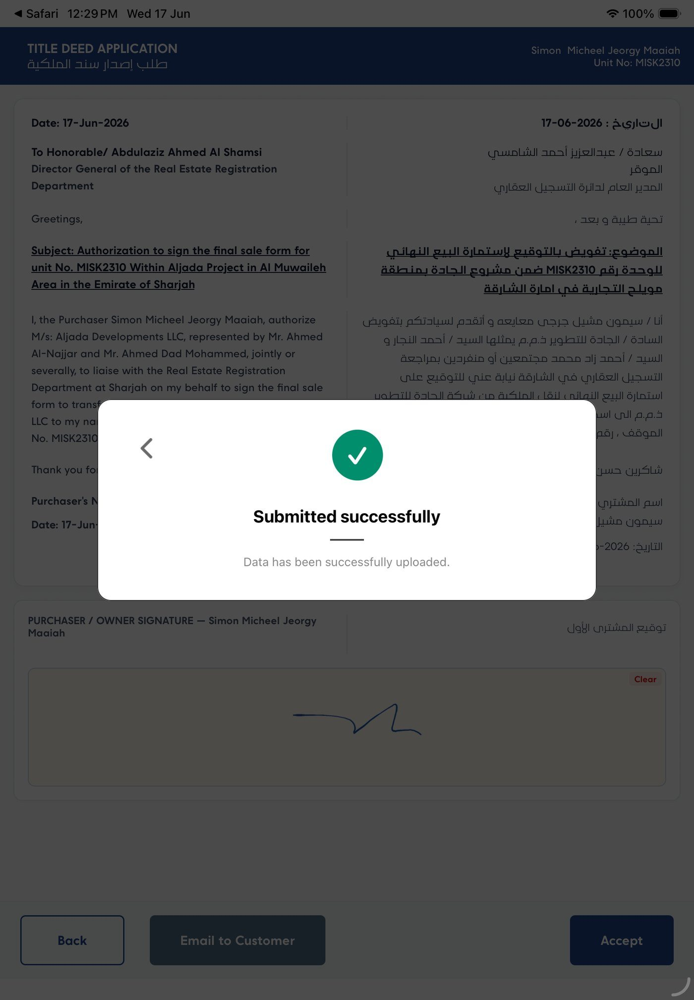

The job
The meeting and the paperwork
Handover is the moment a buyer stops waiting and starts owning. It happens in the unit: keys are counted out, appliances are pointed at, documents are read, and the owner signs.
The paperwork is the awkward part. It's a stack of bilingual forms, and every one of them has to come back signed. On paper that means printing ahead, carrying the stack, filling it in by hand, then scanning and filing it later. And chasing whatever came back incomplete.
The four documents
- A physical checklist. Fifteen rows of keys, cards, safety equipment, appliances and documents
- A key collection authorisation, for when a representative collects instead of the owner
- A signature declaration, for when the signature on file doesn't match the passport
- A title deed application. A formal letter to the Real Estate Registration Department
Every one of them is bilingual. English and Arabic sit side by side on the same page. Both parties read the same document at the same time, so there's nothing to switch between.
The flow
The four steps
Verify what's handed over, authorise who's collecting, take the signatures, submit. The whole thing is designed to finish while everyone is still in the room.
Handover Checklist
Verify every item received. Keys and cards by quantity, everything else by tick.
Counts as you go. 2 / 13 verified, then 12 / 13, then all thirteen.Key Collection
Authorise the representative if the owner isn't the one taking the keys.
Three required fields: name, Emirates ID or passport, mobile number.Digital Signatures
Sign directly on the iPad, in the pad below the terms that were just read.
Both parties. Owner and representative, each with their own pad.Submitted
Handover complete. The record uploads and the confirmation appears on the spot.
No follow-up. Nothing to scan, post or file afterwards.The device
Built for a portrait iPad
Held in two hands or set on a kitchen counter, passed across to the owner and passed back. No phone layout, no desktop layout. The whole design assumes that one posture.
Three decisions that came from the device
Two languages on one page
Arabic runs right-to-left in its own column, aligned to the same paragraph breaks. Either party can follow the other's finger down the page.
I confirm I am the owner of the above property and I authorize the above representative to take handover of the unit and receive the keys.
أؤكد انا مالك العقار أعلاه، وأفوض ممثلي المذكور اعلاه باستلام الوحدة واستلام المفاتيح وبطاقات الدخول.
An extract from the key collection terms, as it appears in the product.
01 · The checklist
Steppers and checkboxes
Most of the list is a yes-or-no. Was the fire blanket there, was the manual handed over. Keys and access cards work differently. There might be two of one and none of the other, and how many matters later.
Why the count is separate
A tick against “Door keys” records that keys changed hands. It doesn't record that one key changed hands. A year later, when the owner asks about the second key, that difference is the entire conversation. So the two countable rows get a stepper, and the tally sits on the row itself.
“If Applicable” is doing real work
Five rows carry that suffix: access cards, parking card, smart lock code, pool kit, dishwasher and fridge. Not every unit has them, and an unticked box shouldn't read as something missing. The label says so on the row itself, instead of in a footnote nobody reads standing up.
The counter ignores the steppers. Thirteen checkboxes, thirteen in the count. So “12 / 13 verified” always means one tick left to find, never an ambiguous quantity.
02 & 03 · Authorisation and signatures
When someone else collects the keys
Owners often can't attend. The key collection authorisation covers that. The owner's details are already on the form, the representative's are typed in beside them, and both sign before anything is handed over.


The prompt on the pad
The empty pad reads “Tap here to sign / اضغط هنا للتوقيع”. It's the smallest piece of copy on the screen, and the one most likely to be read by whoever is less comfortable in the other language. So it shows both languages instead of an icon.
Clearing a signature
A signature drawn on glass rarely comes out right the first time. Every pad has its own Clear control, so the fix is one tap where the mistake is. No scrolling back up to a form-level reset.
The action bar
The four actions at the bottom
Every document ends the same way, and the bar never scrolls out of reach. It's the only part of the interface that stays put while the content underneath changes completely.



What changes
The file closes in the room
Evidenced in the design
- One device replaces the stack. Four documents, one iPad, nothing printed in advance.
- Nothing leaves the unit unsigned. Both signatures are taken on the spot, or sent for signature deliberately.
- The record uploads immediately. No scanning step, and no gap between signing and filing.
- Quantities are written down. Keys and cards get a number on the row.
- Both parties read the same page. No language toggle, so nobody signs a version they didn't see.
Not measured
I don't have figures for time saved per handover, error rates, or how often a document had to be chased afterwards, so none are claimed here. Everything above is what the interface does, not what it achieved.
What would prove it: minutes from arrival to submission, the share of handovers completed without a follow-up, and how many go out for digital signature instead of being signed in person.
Screens
The full set
Every screen above, full size. Click any to open it.
Next case study
my Arada — Customer Portal
What the same owner sees before handover day: a self-service portal tracking a three-year payment journey, documents and requests.